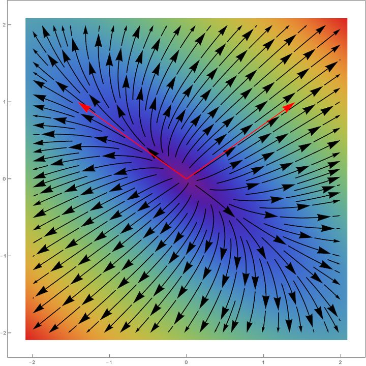

- What is diagonalization?
- Why we need diagonalization?
- The relationship of diagonalization with homogeneous system
- Geometric meaning of eigenvalues and eigenvectors
- When a matrix is diagonalizable
- What matrices are not diagonalizable
- How to find all the eigenvalues and corresponding eigenvectors
- Application of diagonalization
- Reference
What is diagonalization?
For a $n \times n$ matrix $A$ the diagonalization is the process to find a diagonal matrix $D$ and a invertible $n \times n$ matrix $P$ that holds following equality $A = PDP^{-1}$
Why we need diagonalization?
We often need to calculate the power of the matrix, this operation $A^{k}$ is expensive to calculate when $A$ and $k$ is big enough. However, if the matrix $A$ is diagonalizable. The power operation is then cheaper because $A^{k} = (PDP^{-1})^k = PD^{k}P^{-1}$ and the powers of diagonal matrix is straight forward.
$$
D^{k} =
\begin{bmatrix}
\lambda_{1}^{k}
& 0 & \dots & 0\\\\
0 & \lambda_{2}^{k} &
\dots & 0\\\\
\vdots & \vdots & \ddots &
\vdots\\\\
0 & 0 & \dots & \lambda_{n}^{k}\\\\
\end{bmatrix}
$$
The relationship of diagonalization with homogeneous system
Because $A = PDP^{-1} \implies AP = PD$, if we expand the calculation
$$
\begin{aligned}
\begin{bmatrix}
a_{11} &
\dots & a_{1n}\\\\
\vdots & \ddots &
\vdots\\\\
a_{n1} & \dots & a_{nn}\\\\
\end{bmatrix}
*
\begin{bmatrix}
p_{11}
& \dots & p_{1n}\\\\
\vdots & \ddots &
\vdots\\\\
p_{n1} & \dots & p_{nn}\\\\
\end{bmatrix}
&=
\begin{bmatrix}
p_{11}
& \dots & p_{1n}\\\\
\vdots & \ddots &
\vdots\\\\
p_{n1} & \dots & p_{nn}\\\\
\end{bmatrix}
*
\begin{bmatrix}
\lambda_{1}
& \dots & 0\\\\
\vdots & \ddots &
\vdots\\\\
0 & \dots & \lambda_{n}\\\\
\end{bmatrix}\\\\
\begin{bmatrix}
(a_{11}p_{11}+…+a_{1n}p_{n1})
& \dots & (a_{11}p_{1n}+…+a_{1n}p_{nn})\\\\
\vdots
& \ddots & \vdots\\\\
(a_{n1}p_{11}+…+a_{nn}p_{n1})
& \dots & (a_{n1}p_{1n}+…+a_{nn}p_{nn})\\\\
\end{bmatrix}
&=
\begin{bmatrix}
p_{11}\lambda_{1}
& \dots & p_{1n}\lambda_{n}\\\\
\vdots & \ddots
& \vdots\\\\
p_{n1}\lambda{1} & \dots &
p_{nn}\lambda{n}\\\\
\end{bmatrix}
\end{aligned}
$$
We will have the following observation:
$$
\begin{pmatrix}
a_{11}p_{1j}+…+a_{1n}p_{nj}\\\\
\vdots\\\\
a_{n1}p_{1j}+…+a_{nn}p_{nj}\\\\
\end{pmatrix}
=
\begin{pmatrix}
p_{1j}\lambda_{j}\\\\
\vdots\\\\
p_{nj}\lambda_{j}\\\\
\end{pmatrix}
\implies
(A-\lambda_{j}I)
\cdot
\begin{pmatrix}
p_{1j}\\\\
\vdots\\\\
p_{nj}\\\\
\end{pmatrix}
=
\vec{0}
$$
The above observation is important because it is the same as solving a homogeneous system of equations
$$
(A-\lambda_{j}I) \cdot \vec{p}_{j} = \vec{0}
$$
which $\vec{p}_{j}$ is
$$
\begin{pmatrix}
p_{1j}\\\\
\vdots\\\\
p_{nj}\\\\
\end{pmatrix}
$$
$\vec{p}_{j}$ is called eigenvector, $\lambda{j}$ is the corresponding eigenvalue.
Geometric meaning of eigenvalues and eigenvectors
From $(A-\lambda I) \cdot \vec{p} = \vec{0}$ we know that $A\vec{p} = \lambda\vec{p}$, so from geometrical perspective, eigenvector $\vec{p}$ only suffer stretch for a given transformation $A$ and $\lambda$ its corresponding stretch ratio.
If we draw in a 2D space, the effect $v^{\prime}-v$ of applying the transformation of a $2 \times 2$ matrix $A$, where $v$ is the original vector and $v^{\prime}$ the vector after the transformation.

We notice the vectors with the same direction as eigenvectors (red arrows) haven’t changed the direction after the transformation.
If we use eigenvectors as basis, then the transformation is easier because we only need to multiply each component per corresponding eigenvalue. $P$ is actually the linear transformation that change basis formed by eigenvectors to standard basis and $P^{-1}$ from standard basis to basis formed by eigenvectors.
When a matrix is diagonalizable
A $n \times n$ matrix $A$ is diagonalizable if and only if $A$ has $n$ linearly independent eigenvectors.
What matrices are not diagonalizable
- A rotation matrix is not diagonalizable over real fields
- Nonzero nilpotent matrices
How to find all the eigenvalues and corresponding eigenvectors
From the previous conclusion $(A-\lambda_{j}I) \cdot \vec{p}_{j} = \vec{0}$ and invertible matrix theorem, then a number $\lambda$ is an eigenvalue of $A$ if and only if $f(\lambda) = det(A-\lambda I)= 0$, $f(\lambda)$ is called the characteristic polynomial of $A$.
The process of finding all the eigenvalues and corresponding eigenvectors is following
- Find all the roots $\lambda$ of the characteristic polynomial.
- For each $\lambda$, compute corresponding eigenvectors by finding linearly independent non-trivial solutions of the homogeneous system of equations $(A-\lambda I) \cdot \vec{p} = \vec{0}$
Application of diagonalization
One of important application of diagonalization is PCA. In PCA we need to calculate eigenvectors and eigenvalues of covariance matrix. Since covariance matrix is symmetric matrix hence it is always diagonalizable.
Reference
- Interactive Linear Algebra. 5.1 Eigenvalues and Eigenvectors
- Interactive Linear Algebra. 5.2 The Characteristic Polynomial
- Interactive Linear Algebra. 5.4 Diagonalization
- 如何理解矩阵特征值？ - 闫星光的回答 - 知乎
- What kind of matrices are non-diagonalizable?